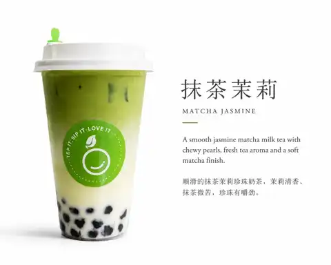

Mango Pomelo
金芒甘露 · mango, citrus, tea, creamy foam and sago.
These are the flavours and collections that shape OneSip today. Because our menu evolves, the live ordering page remains the final source for current items, sizes, prices, toppings and availability.
Know what you want? Go straight to the live menu, customise it, pay online and collect at the store.
Order online ↗金芒甘露 · mango, citrus, tea, creamy foam and sago.
芝芝葡萄 · juicy grape, jasmine tea and silky cheese foam.

手打冰鲜柠檬水 · bright citrus, hand-crushed and refreshing.

抹茶茉莉 · jasmine, matcha, milk and pearls.

草莓森林 · strawberry and matcha in a soft layered cup.

生椰抹茶 · creamy coconut and deep green matcha.
芝芝葡萄 · grape, jasmine tea, cheese foam.

蜜桃四季春 · juicy peach over fragrant oolong tea.
手打冰鲜柠檬水 · clean, sharp and thirst-quenching.

经典奶茶 · honey black tea, milk and chewy pearls.
茉莉鲜奶茶 · floral tea and fresh milk, clean and soft.
Floral and tea-led fresh milk creations, updated with the menu.

生椰拿铁 · espresso, milk and smooth coconut.
Seasonal fruit-led espresso combinations from the fusion coffee line.
Cakes, dessert bowls and rotating sweet treats.